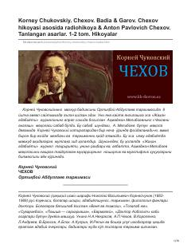

CKorney Chukovskiyning Anton Pavlovich Chexov hayoti va shaxsiyatiga bag'ishlangan adabiy ocherki.
Ushbu asar rus yozuvchisi Anton Pavlovich Chexovning hayoti va ijodiga bag'ishlangan adabiy ocherk va xotiralardan iborat. Korney Chukovskiy qalamiga mansub ushbu matn yozuvchining insoniy fazilatlari, ayniqsa uning o'ta mehmondo'stligi va atrofiga odamlarni jamlashga bo'lgan intilishini yoritib beradi.